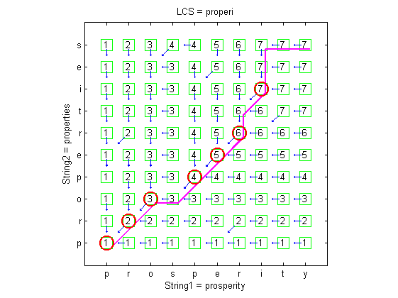
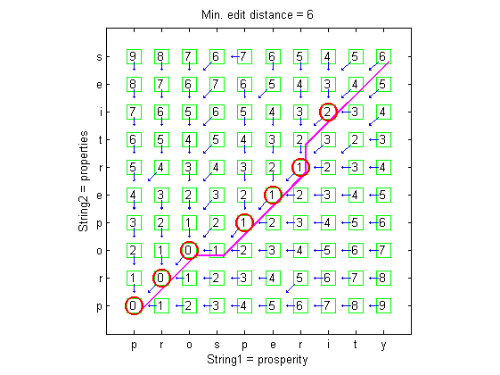

String Comparison
MLT provides two basic functions for string comparison: the longest common subsequence and the edit distance.
Contents
Longest common subsequence (LCS)
Given a sequence, we can delete any elements to form a subsequence of the original sequence. For instance, given a string s = "uvwxyz", we can delete v and x to get a subsequence "uwyz". For any given two sequences A and B, the similarity between them can be defined as the length of the longest common subsequence ( LCS for short) of these two sequences, which can be computed efficiently by dynamic programming.
Let us define the optimum-value function LCS( A, B ) as the length of the longest common subsequence between A and B . Then the recursive formula for LCS can be defined as follows:
- LCS( A x, B y) = LCS( A , B )+1 if x = y.
- LCS( A x, B y) = max(LCS( A x, B ), LCS( A, B y)) if x ≠ y.
The boundary conditions are LCS( A, []) = 0, LCS([], B ) = 0. The following example demonstrates a typical result of LCS of strings "prosperity" and "properties":
str1 = 'prosperity'; str2 = 'properties'; plotOpt = 1; [lcscount, lcsPath, lcsStr, lcsTable] = lcs(str1, str2, plotOpt);
As shown in the plot, the circle positions indicate common characters.
Edit distance
We can use three basic operations of "delete", "insert", and "substitute" to convert a string into another one. The edit distance between two strings is defined as the minimum number of the basic operations that are required to converting a string into another. Similarly, we can also define the costs of these operations and then find the required operations for conversion one string to another with the minimum cost.
We can also use the concept of dynamic programming to compute the edit distance between two strings. Let the optimum-value function ED( A , B ) defined as the edit distance between strings A and B. Then the recursive formula for ED is shown next, assuming the costs of "delete" and "insert" are 1, while "substitute" is 2.
- ED( A x, B y) = ED( A , B ) if x = y.
- ED( A x, B y) = min(ED( A , B )+2, ED( A x, B )+1, ED( A , B y)+1) if x ≠ y.
The boundary conditions are ED( A , []) = len( A ), ED([], B ) = len( B ).
The following example demonstrates a typical result of edit distance of strings "prosperity" and "properties":
str1 = 'prosperity'; str2 = 'properties'; substituteCost=2; plotOpt = 1; [minDist, edPath, edTable] = editDistance(str1, str2, substituteCost, plotOpt);
As shown in the plot, the circle positions indicate common characters.
Copyright 2011-2012 Jyh-Shing Roger Jang.